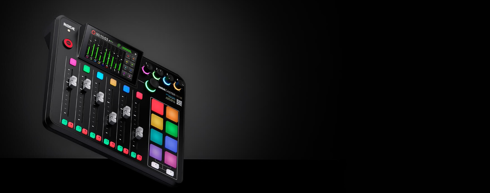
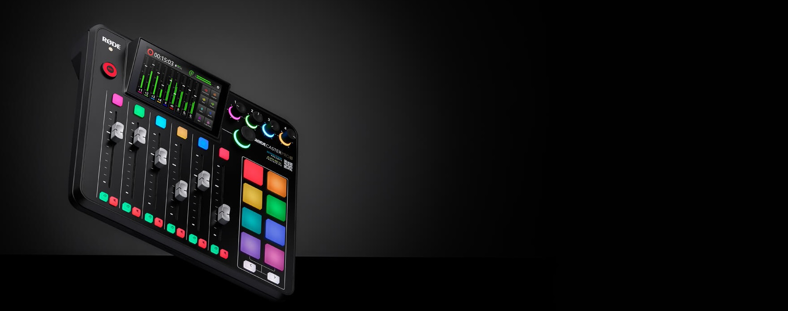

Your Search For The Perfect Headphones Is Over
Experience sound like never before with the NTH-100s. Exceptional sonic performance, superior comfort and iconic looks that inspires creativity.
LEARN MORE
 


The RØDECaster Pro II is the world's most powerful all-in-one audio solution for streamers, podcasters, musicians, and creators. Take your content to the next level.

Experience sound like never before with the NTH-100s. Exceptional sonic performance, superior comfort and iconic looks that inspires creativity.


The NT-USB is a studio-quality USB condenser microphone that offers impeccable audio, elegant looks and premium features, all in an easy-to-use form factor, the NT-USB will have you sounding like a pro in seconds.

We explore the differences between XLR and USB microphones, the advantages of each and which type is best suited to your needs.

We explore the difference between large- and small-diaphragm condenser microphones, and what each is best used for.

Learn more about the different types of condenser mics, how they work and the best applications for using them.

Firmware version 1.0.7 includes key feature additions, such as custom routing for USB and Bluetooth outputs, and more.